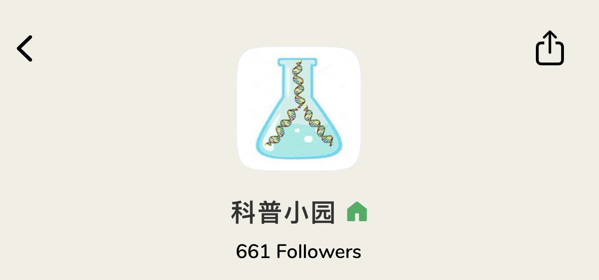

Wendy Ye (clubhouse) (微博) (微信公众号)
美国医生和生物医学博士学位，一线抗疫工作者，在微博、公众号“阿司匹林42195米”写了多篇新冠科普文章。
Yebin Zhou (clubhouse) (微博) (微信公众号)
在药企工作的免疫学研究人员。公众号“一个生物狗的科普小园”。
Joanna (clubhouse)
加拿大药学博士，一线抗疫工作者。前新冠患者，发布过多部新冠自我隔离的科普视频。
Bill Wang (clubhouse) (微博)
免疫学博士，长达12年的病毒研究人员，在美国开发HIV和COVID-19疫苗。微博：子陵在听歌。
Gracie Sheng (clubhouse)
在美制药界工作二十多年，目前在硅谷一著名生化公司做临床和新药申报工作，熟悉FDA新药审批过程。
公众号
Clubhouse
